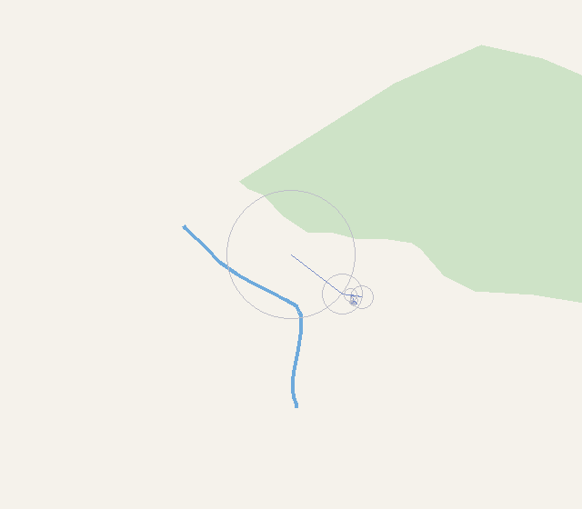

Qu'est-ce que ça dessine ?

Un tas de cercles qui tournent pour, additionnés les uns aux autres, qui correspondent à un nombre à cinq chiffres.

Un tas de cercles qui tournent pour, additionnés les uns aux autres, qui correspondent à un nombre à cinq chiffres.